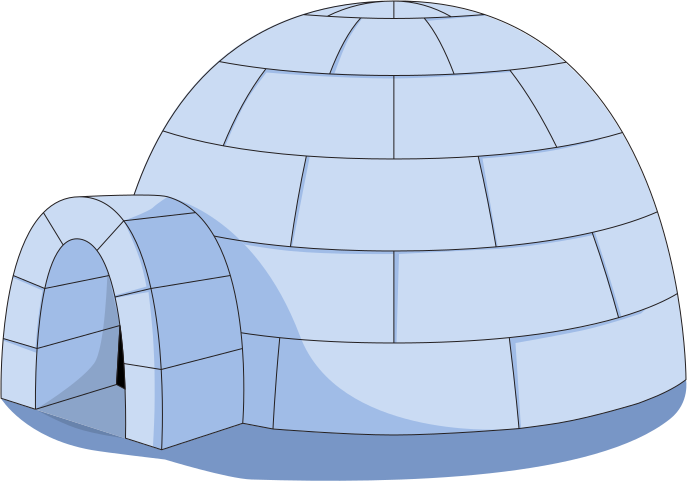

registration
mentor sign up
Freetail Hackers
A learnathon is a virtual two-day event held on April 22nd and 23rd by Freetail Hackers for students of ALL backgrounds to learn about technology. We want to create an inclusive space for anyone interesed in techonology to learn and explore it. Attendees will get the chance to learn new skills, meet other people going through the learning journey, and create a project to showcase!
The Learnathon is designed to help people from all backgrounds transform from tadpoles to code toads! On Saturday, April 3rd, we will have a day specifically designed for workshops. Most of these workshops will assume no prior knowledge and will be a space for anyone to learn. On Sunday, April 4th, we will have a hackathon that will give attendees a chance to use what they have learned to build a project. This can sound scary at first but we will give you the tools you need to go from no programming experience to building a project! Of course, the experience can be personalized as attendees have the option of attending just one or both of the two events.
The Learnathon is designed to help people from all backgrounds transform from tadpoles to code toads! On Saturday, April 3rd, we will have a day specifically designed for workshops. Most of these workshops will assume no prior knowledge and will be a space for anyone to learn. On Sunday, April 4th, we will have a hackathon that will give attendees a chance to use what they have learned to build a project. This can sound scary at first but we will give you the tools you need to go from no programming experience to building a project! Of course, the experience can be personalized as attendees have the option of attending just one or both of the two events.

Anyone! We especially welcome and encourage students with little to no technical background to join us. Even if you're just vaguely interested in what the buzz around tech is, we are happy and excited to give you a glimpse into it. Additionally, all workshops will be recorded unless noted otherwise, so don't worry if you can't make it to a specific time; you can always watch afterwards.
There are many resources we've prepared to help learn this weekend. The first is our Ultimate Hackathon Starting Guide (UHSG). This was created by our teach and consists of tutorials, starter code, and links to more resources for the main technologies people use at hackathons. It goes over common hackathon logistics, whether or not you should use a certain technology, and where to get started withyour project. The second resource is our Youtube Channel which contains all the workshops from our past year of events. If you don't see a topic you are interested in or just want to learn more about a certain area, feel free to browse around our channel and look for it. Finally, all of the organizers and mentors will be active on Discord to support you. We are all here to see you learnand succeed. Don't hesistate to reach out to us if you are feeling uncertain or have any questions!